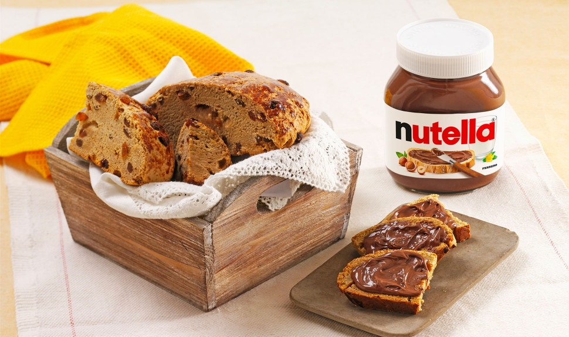

PRODUITS
Un amour, différentes façons de le partager
Avec son goût unique, Nutella® a créé une gamme de produits que vous pourrez déguster à différents moments de la journée. Découvrez tous les produits Nutella®.
4 produits, un seul amour : Nutella®
Le point commun de tous ces produits ? Une recette signature avec des ingrédients soigneusement sélectionnés. Ce qui rend la recette Nutella® si délicieuse, c'est le soin et la passion que nous mettons à chaque étape de notre production, pour vous offrir une expérience savoureuse et délicieuse. Le goût et la qualité sont garantis pour chaque produit Nutella®. C'est pourquoi, aujourd'hui notre page Facebook compte plus de 31 millions de fans qui nous suivent pour partager leur optimisme, propager leur joie de vivre et découvrir de nouvelles recettes.
Le pot de Nutella®
Partageons des moments ensemble !
Nutella® est sur les tables du petit-déjeuner de millions de personnes dans le monde depuis plus de 50 ans, offrant de bons moments pour commencer la journée. Une tranche de pain avec du Nutella® a un goût délicieux. Grâce à notre recette unique et inimitable, Nutella® est devenu la pâte à tartiner aux noisettes et au cacao la plus populaire et emblématique du monde.
Nutella Biscuits
Le seul biscuit croquant au coeur onctueux de Nutella® né pour être partagé avec ceux que vous aimez.
Un délicieux biscuit croquant, réalisé à partir de farine de froment et de sucre de canne, pour vous faire vivre une expérience inédite. Tout ce que vous aimez dans un biscuit croquant avec toute l'onctuosité et le goût unique du Nutella®
Nutella B-ready
C'est le plaisir Nutella® où que vous soyez !
La texture croustillante, la légère touche salée de l'enveloppe et les éclats subliment le goût unique de son coeur au Nutella®. Nutella B-ready c'est le goût unique de Nutella® combiné à une texture croustillante, facile à emporter !
Nutella&Go
Comblez vos petites faims, où et quand vous voulez
D’un côté, la délicieuse pâte à tartiner aux noisettes et au cacao Nutella®, et de l’autre, des batônnets dorés au four et croustillants. Nutella & Go comble vos petites faims, où et quand vous voulez
Nutella® Muffin
Préparé avec amour, rempli d'un coeur de Nutella®
La recette de notre pâtisserie Nutella® Muffin combine des ingrédients de grande qualité avec un parfum équilibré et un goût harmonieux qui rehaussent la saveur de Nutella® en son coeur. Nutella® Muffin est le partenaire idéal pour une pause gourmande.